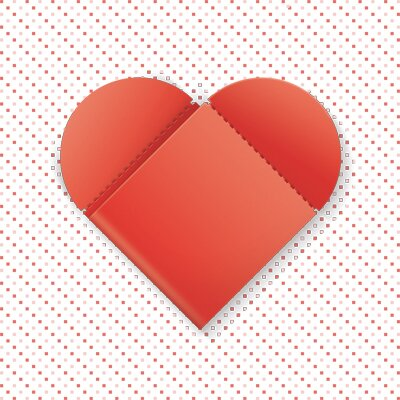
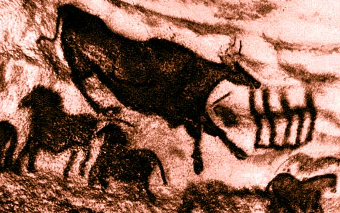

Поиск идей


Задаваясь вопросом, когда зародился дизайн - всплывают в памяти рисунки первобытных людей, схематичные изображения животных и себе подобных, их легкость восприятия сейчас. Однако принято считать, что дизайн зародился в эпоху развитого промышленного производства. Графический дизайн, как термин на первых порах означал художественный монтаж текста и изображения на напечатанной странице для формирования зрительно-словесного образа с целью информирования, развлечения читателя. С появлением цветной печати в конце XIX века графический дизайн стал отдельным видом искусства. В производстве массовой печатной продукции и рекламы в тот период были задействованы в основном люди, как правило, не имеющие художественного образования. Это привело к появлению искусства поверхностного и малозначимого. Ситуация изменилась в первой половине ХХ века. Европейские художники быстрее откликнулись на прогресс в науке и технике и первыми пошли на радикальные изменения. Господствовавший в тот период модерн в искусстве и дизайне выразился в различных формах: кубизм и сюрреализм во Франции, дадаизм в Швейцарии, футуризм в Италии, конструктивизм и супрематизм у нас. Немецкая школа "Баухауз" явилась первой школой в образовании различных стилей, которые, соединяясь и трансформируясь, дали развитие новому направлению в дизайне.
Поиск цветового решения – один из главных вопросов, стоящих перед дизайнером. Восприятие изображения по большей части определяется именно цветом. Он передает настроение, придает значение форме, делает ее выразительной. Звуки, эмоции, настроение имеют свою цветовую характеристику. Цвет может передать тепло или холод, ободрять или угнетать. Поэтому даже начинающий дизайнер обязан знать основные сведения о цвете и свете: их воздействие на человека, зависимость восприятия от освещения, гармоничные сочетания тонов и их влияние друг на друга.Глубина цвета - характеристика свойственная цифровым растровым изображениям, определяет диапазон цветов, передаваемых изображением, от этого зависит качество (натуральность цветов) и размер изображения. Для хранения информации о цвете каждого пикселя используется определённое количество бит, чем больше использовано бит, тем выше точность цветопередачи.